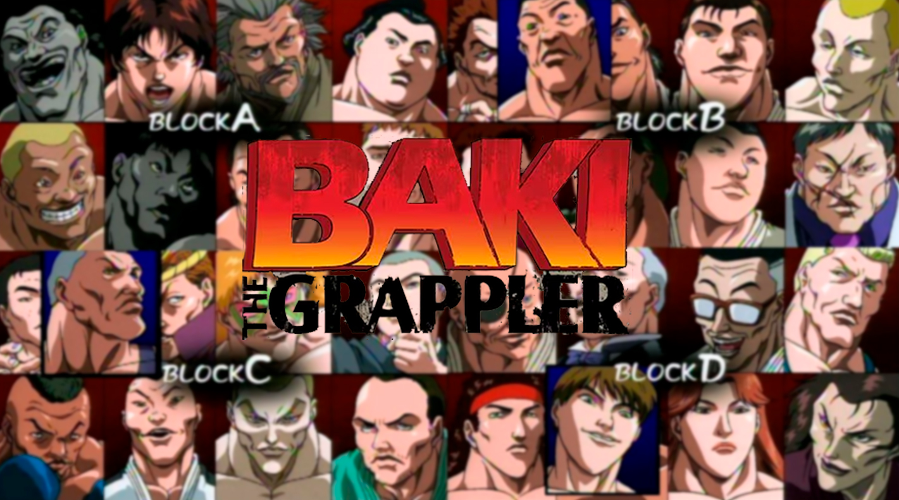
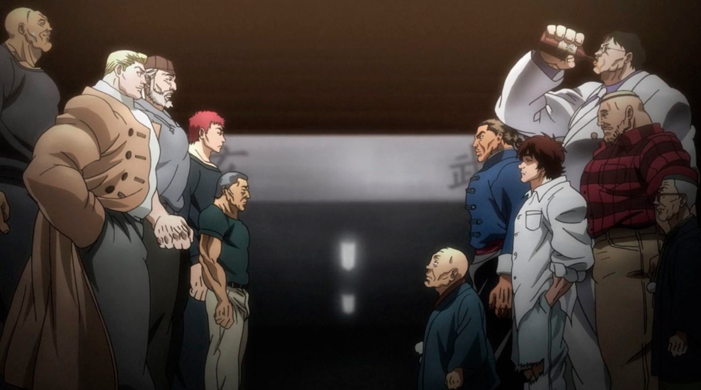
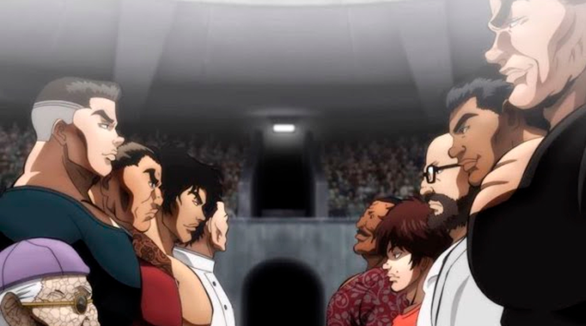
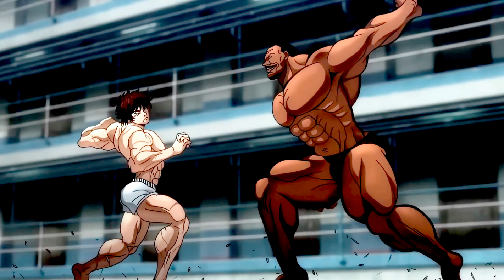
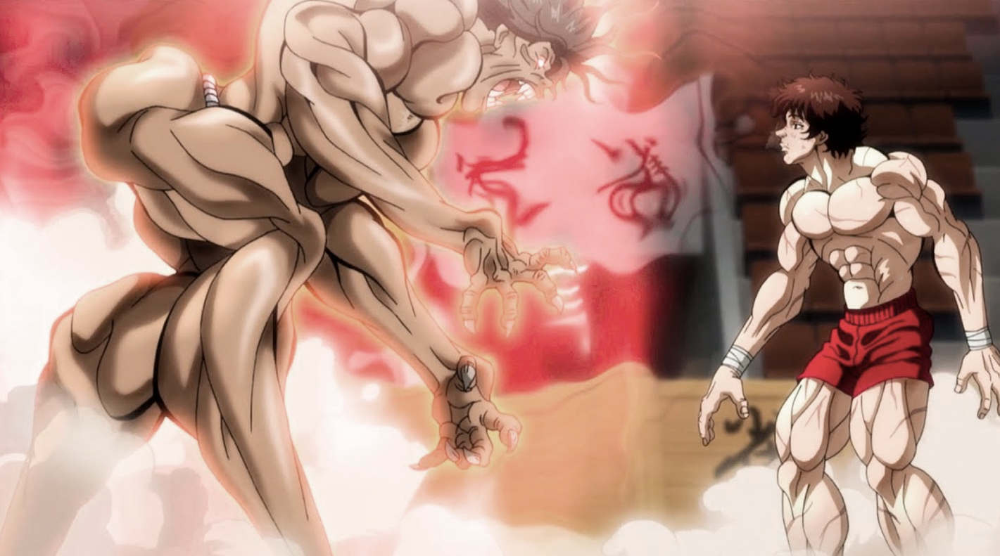
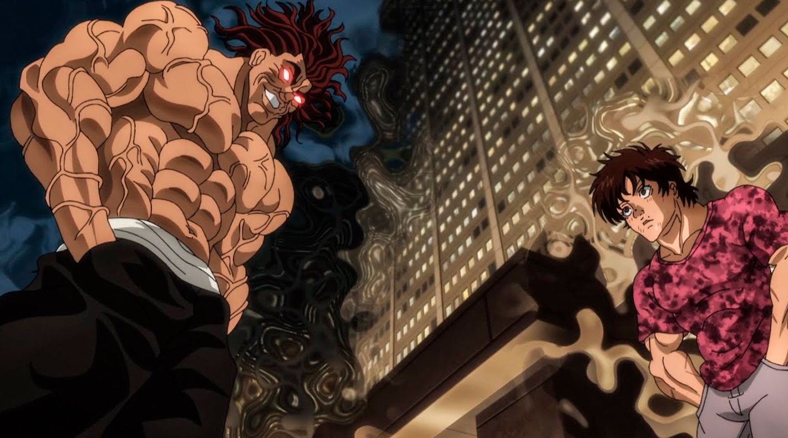
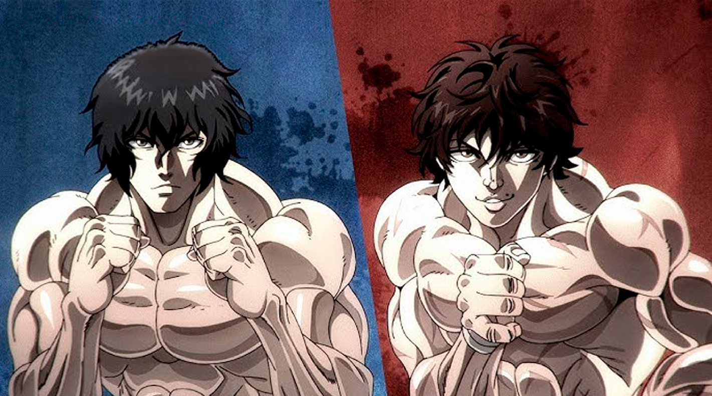
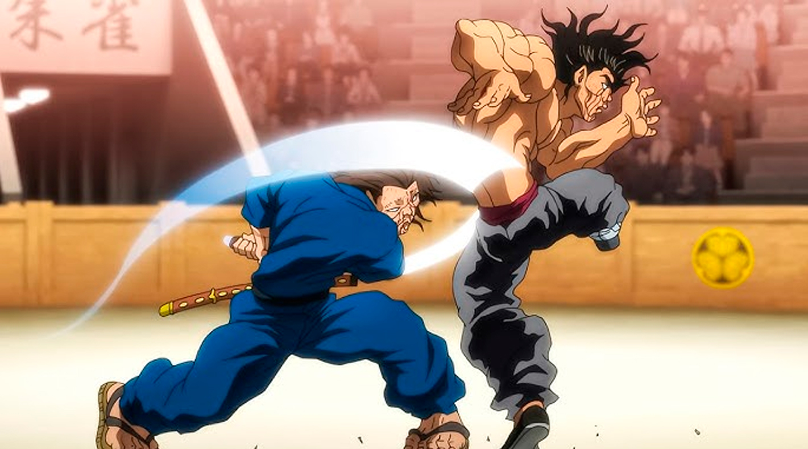

Sagas y Arcos

El Torneo Máximo de la Arena Subterránea
El Nacimiento del Campeón
Convocado por Mitsunari Tokugawa, los guerreros más letales del planeta se reunieron bajo el Domo de Tokio en un torneo sin reglas. Baki, tras superar brutales enfrentamientos contra maestros de diversas disciplinas, llegó a la sangrienta final contra su medio hermano, Jack Hanma. Baki emergió victorioso, coronándose como el Campeón indiscutible.

Saga de los Convictos Condenados a Muerte
"Queremos conocer la derrota"
Un fenómeno mundial de sincronicidad hizo que cinco de los criminales más peligrosos del mundo escaparan simultáneamente para saborear la derrota. Baki y los luchadores del torneo subterráneo tuvieron que enfrentarse a ellos en las calles en una guerra de supervivencia donde todo estaba permitido.

El Gran Torneo Raitai
La Cura en la Cuna del Kenpo
Envenenado por la Mano Venenosa de Yanagi, Baki viajó a China para participar en el legendario Torneo Raitai. Aliado con Yujiro, Retsu y Kaku Kaioh, logró purgar el veneno de su sistema y renacer con una fuerza aterradora.

El Combate en el Pentágono Negro
Desafiando al Sr. Desencadenado
Para acercarse al nivel de su padre, Baki orquestó su propio arresto para enfrentarse a Biscuit Oliva en la Prisión de Arizona. Allí se enfrentó tanto a Guevara como al mismísimo Oliva en un choque de pura fuerza bruta.

La Amenaza Prehistórica: Pickle
El Despertar del Depredador Jurásico
Un homínido de la era de los dinosaurios fue revivido. Tras aniquilar a grandes guerreros, Baki se enfrentó a él en un choque entre la técnica marcial refinada y el instinto puro y salvaje de la prehistoria.

La Pelea de Padre e Hijo
La Culminación de una Vida de Odio
Baki reta abiertamente a "El Ogro", Yujiro Hanma, a la pelea definitiva. Una confrontación épica donde padre e hijo liberan todo el poder de su linaje para decidir quién es realmente la criatura más fuerte.

El Choque de Universos: Baki vs Kengan
El Torneo de Exhibición Definitivo
Una colaboración histórica donde los luchadores de la Arena de Tokugawa se enfrentan a los gladiadores de la Asociación Kengan. Baki cruza puños con Ohma Tokita en un combate brutal.

Baki Dou: La Espada sin Sombra
El Santo de la Espada Resucita
Mediante clonación y espiritismo, Musashi Miyamoto es traído al presente. Su concepto de "combate a muerte" choca violentamente con las artes marciales actuales en una serie de duelos sangrientos.